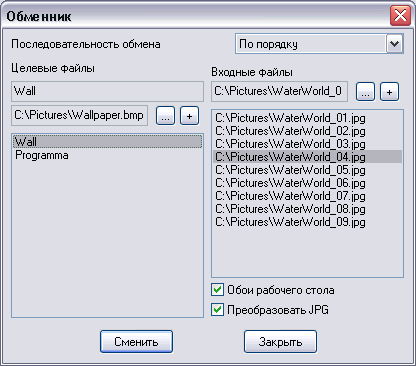

Плагин для смены обоев и прочего
Версия 1.0
Автор: Python <smisoft@rambler.ru> of SmiSoft (SA)
Что это такое:
Плагин предназначен для замены одного файла файлами из списка по заданному закону.
Это означает, что можно установить один файл обоев рабочего стола, один звук и т.д., а затем запрограммировать плагин, чтобы он менял обои, звуки и прочее по заданному закону.
Плагин предназначен для ручной замены, для автоматизации следует применять мой плагин tar_timer или ему подобные.
Возможности:
Заменяет указанный файл файлами из заданного списка по заданному закону.
Алиасы:
- ~change
- Синтаксис:
~Change [идентификаторы.../*] [+/-/+n/-n/n]
- Описание:
Меняет выбранные файлы, все файлы, или вызывает редактор.
- Параметры:
- Идентификаторы... - список идентификаторов, разделенных пробелами, или единственный условный идентификатор *, означающий "все". Если указать несуществующий идентификатор, ничего не произойдет.
- +/- - сменить файлы с указанными идентификаторами на следующий/предыдущий. Если используется хаотический выбор вперемешку, то выбрать следующий случайный файл.
- +n/-n - сменить файлы с указанными иденитификаторами на следующие по списку (вперед/назад на n элементов). При этом элементы считаются зацикленными. Результат не зависит от того, используется выбор вперемешку или по порядку.
- n - установить файлы с указанными идентификаторами в файлы с указанным номером по списку. Номера зациклены, то есть не произойдет ошибки, если указать несуществующий номер. Нумерация файлов - с единицы.
Если параметры не указаны, вызывается редактор:
Поле Последовательность обмена выбирает режим обмена файлов по умолчанию: вперемешку (хаотически) или по порядку.
Поле Целевые файлы указывает, какие файлы будут замещаться. Верхнее поле редактирования - идентификтор (который используется в команде замены), нижнее - показывает имя файла. Кнопка ... - изменить имя файла. Кнопка + - добавить новый файл. В списке отображены все доступные идентификаторы. Доступны следующие клавиши редактирования:
Ctrl-Up, Ctrl-Down, Ctrl-PgUp, Ctrl-PageDown - переместить файл вверх/вниз/в начало/в конец списка.
Insert, Delete - вставить новый файл, или удалить выделенный.

Как пользоваться:
Я рассматриваю случай, когда вы пытаетесь использовать мой плагин для автоматической замены обоев рабочего стола.
Создайте любой файл .bmp и установите его обоями рабочего стола. Если ваша коллекция обоев имеет одинаковое разрешение (равное разрешению вашего экрана), то вам ничего не придется делать, иначе поставьте режим "Растягивать". Выберите его на панели целевых файлов. Пусть его идентификатор Wall. Теперь выберите в правом столбце все те файлы, ккоторые вы хотите заменять. Теперь по команде ~change wall + вы перейдете к следующим обоям.
Установка:
Скопируйте файл tar_change.dll, tar_change.ini и tar_change.chm в каталог plugins установленного TaR, затем зарегистрируйте плагин.
Особенности:
Программа тестировалась только под Windows XP.
История:
[+] Новая фича
[*] Пофиксен баг
[-] Убрана фича
Версия 1.0 - 24.06.05
[+] Первая рабочая версия